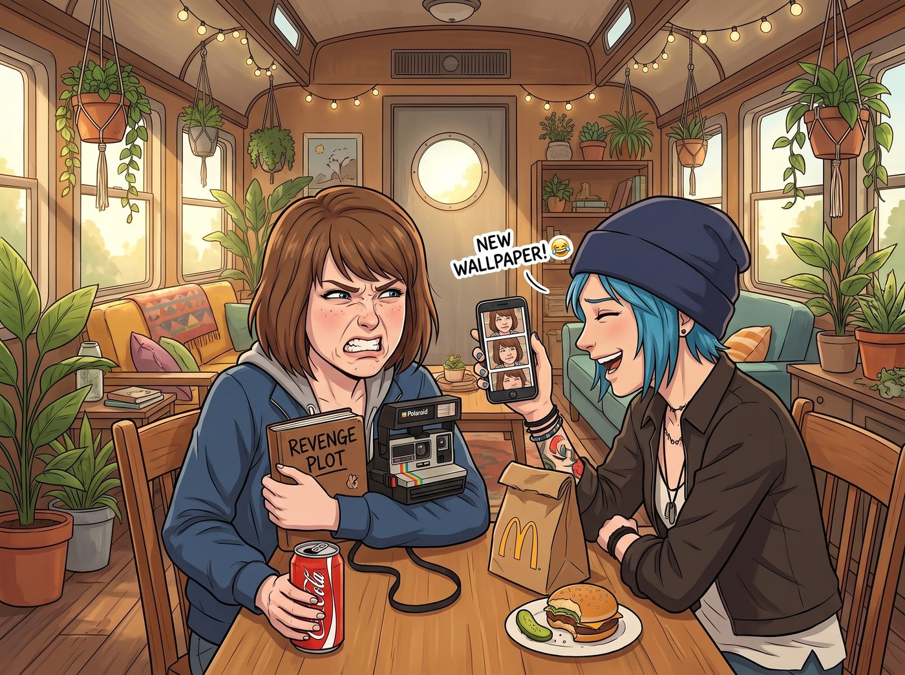
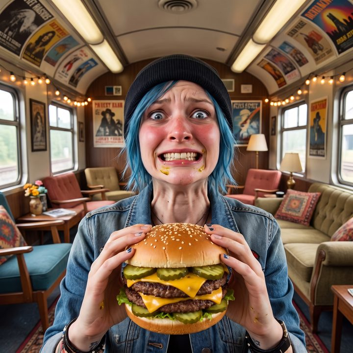

街頭霸王的酸度抗性測試


剛才 Max 才因為一口意外踩中的高濃度酸黃瓜，在餐桌上表演了一齣五官扭曲成核桃的災難秀，而且全程被 Chloe 拿著手機笑著連拍，還揚言要設成手機桌布。
Max 咬牙切齒地灌完可樂，把那份屈辱記在心裡，默默拿起自己的寶麗來相機，端坐在原地，只等一個絕佳的復仇時機。
一、囂張的宣戰
「笑死我了，Maxine，妳那點可憐的味覺神經難道是紙糊的嗎？」Chloe 抹掉眼角笑出來的眼淚，隨手拿起自己那個被壓得有些扁的雙層芝士漢堡，「看好了，阿卡迪亞灣的街頭霸王是怎麼對付區區幾片酸黃瓜的。這點酸度對我來說，簡直就像是——」
為了證明自己的強悍，Chloe 張開大嘴，極度囂張地對著漢堡的正中央狠狠咬了一大口。
命運在這個瞬間展現了它殘酷的幽默感。那個在得來速打工的員工，或許是剛好手抖，在 Chloe 的漢堡中央，整整齊齊地疊放了五片酸黃瓜。這已經不是漢堡了，這是一個隱藏在兩塊牛肉餅之間的酸黃瓜特異點。
二、面部肌肉抗爭史
咀嚼的第一秒，Chloe 臉上還掛著不屑的冷笑。咀嚼的第二秒，那股混合著明礬和高濃度醋酸的汁液在她的舌苔上全面核爆。
街頭霸王的尊嚴，迎來了史詩級的考驗。
與 Max 那種五官瞬間擠成核桃的物理屈服不同，Chloe 剛才才嘲笑完 Max 的狼狽模樣，此刻說什麼也不肯在同一張餐桌前，以同樣的方式出糗給大家看。死撐面子的好勝心，讓她硬是把即將奪眶而出的醜態強行按了回去。
於是，車廂裡的眾人目睹了一場極度慘烈的面部肌肉抗爭史。Chloe 的雙眼瞬間瞪得像銅鈴一樣大，眼眶裡幾乎是肉眼可見地湧出了生理性淚水。她的臉頰肌肉因為極度的酸澀而開始不受控制地瘋狂抽搐，但她死死咬緊牙關，硬是把原本要皺成一團的五官，強行撐開在一個極度驚恐且僵硬的微笑上。
她的臉憋得通紅，脖子上的青筋都爆了出來，整個人彷彿被施了石化魔法。
「Chloe……妳還好嗎？」Max 放下可樂，舉起早已準備好的相機，等待著這一刻。
「我……非……常……好……」Chloe 僵硬地蠕動著嘴唇，硬生生地把那口堪比化學武器的酸黃瓜嚥了下去。但當她開口說話時，原本那種低沉沙啞的龐克嗓音，因為喉嚨被酸液刺激到極度收縮，竟然發出了一種宛如慘遭踩踏的尖叫雞般的、極度尖銳的假音。
「噗——！！」Max 這下徹底繃不住了，毫不客氣地按下了寶麗來的快門，「咔嚓！」
三、二次物理暴擊
「咳咳咳咳！！！」裝酷失敗的 Chloe 終於崩潰了。她再也顧不上什麼街頭霸王的尊嚴，一把抓起桌上那杯加滿冰塊的可樂，像個在沙漠裡渴了三天的旅人一樣，將吸管塞進嘴裡瘋狂猛吸。
但她忘了，碳酸飲料裡的二氧化碳氣泡，在接觸到被強酸刺激過的舌頭時，會產生一種宛如無數根小針同時扎在味蕾上的二次物理暴擊。
「噗哈——好痛痛痛痛！！！」Chloe 被可樂嗆得眼淚狂飆，一邊瘋狂咳嗽，一邊吐著舌頭像小狗一樣用手扇風。
四、行政與資本的雙重補刀
工作台前的 Lily 看著這一幕，默默地在平板上新建了一個檔案。「記錄：Price 學姐試圖用意志力對抗高濃度酸性物質的化學刺激，導致了嚴重的喉部肌肉痙攣與碳酸二次灼傷。」實習生推了推反光的圓框眼鏡，語氣裡帶著一絲科學家的冷酷，「實驗證明，碳基生物的自尊心在食品科學面前，是不堪一擊的。」
Victoria 則切著沙拉，冷冷地補了一刀：「這就叫現世報，Price。妳現在吐舌頭的樣子，比上次那兩百隻尖叫雞還要滑稽。」
這時，Kate 繫著小圍裙，端著兩杯剛泡好的溫蜂蜜水走了過來。「哎呀，吃漢堡怎麼能喝冰可樂呢，太傷胃了。」小天使溫柔地將蜂蜜水遞給眼淚汪汪的 Chloe，眼神裡充滿了慈愛，「快喝點溫暖的蜂蜜水吧。酸黃瓜雖然調皮，但它們也是為了讓肉肉變得更好吃呀。主會寬恕這些酸酸的小蔬菜的。」
接過大天使的蜂蜜水，Chloe 終於覺得自己從地獄裡爬了回來。而一旁的 Max，看著手裡那張成功復仇的照片，滿意地露出了今天最燦爛的笑容。